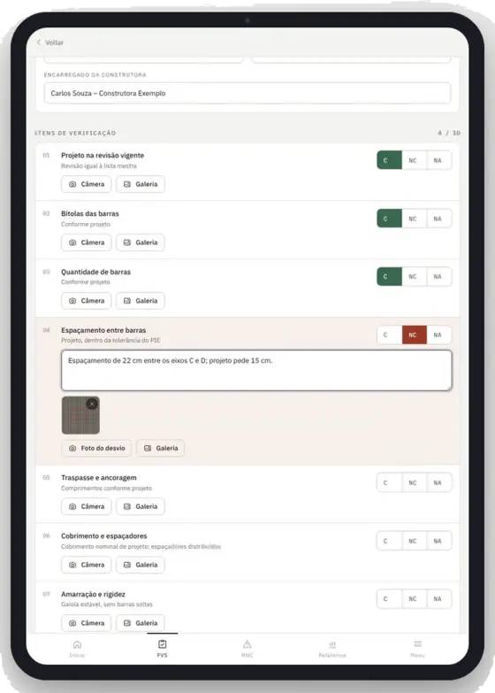
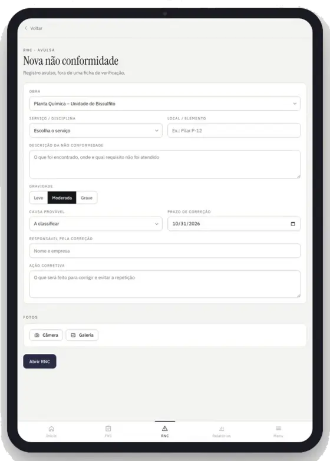
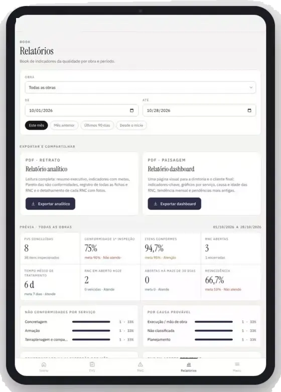

Inspeção de qualidade
Controle da qualidade em campo para obras industriais
Nossa equipe inspeciona, registra e mede a qualidade da obra em nome da gerenciadora. Regra simples: nenhum serviço crítico é liberado sem ficha de verificação aprovada.
O problema
O retrabalho é um custo que a obra paga sem ver.
Erros de armação, forma ou concretagem só aparecem quando já custam caro: demolição, nova concretagem e cronograma perdido. Com inspeção antes de cada liberação, o desvio é corrigido enquanto ainda é barato.
≈ 5%
do custo da construção vai, em média, para refazer serviço em campo. Numa obra de R$ 50 milhões, são cerca de R$ 2,5 milhões.
Fontes: Construction Industry Institute, 359 projetos (Hwang et al., 2009); CIDA, Austrália, citada por Love & Edwards (2004).
A solução
Nossa equipe vira a barreira de qualidade da sua obra
- 01
Inspecionamos
Ficha de verificação de serviço (FVS) digital, com critério de aceite e foto, antes de cada liberação.
- 02
Registramos
Cada não conformidade vira um registro (RNC) com causa, responsável, prazo e reinspeção.
- 03
Controlamos
Materiais, certificados e rastreabilidade dos lotes que chegam à obra.
- 04
Medimos
Indicadores mensais para a gerenciadora e para o cliente final.
Regra simplesNenhum serviço crítico é liberado sem ficha de verificação aprovada.
Como funciona
Do serviço executado ao serviço liberado
- 1
Construtora executa
A frente de serviço avisa que a etapa está pronta para inspeção.
- 2
Saccani inspeciona
O inspetor preenche a FVS item a item no tablet, com fotos.
- ✓
Conforme: serviço liberado
A FVS é assinada e a próxima etapa pode começar, como a concretagem.
- !
Não conforme: RNC aberta
Com foto, local e prazo. A construtora corrige e a Saccani reinspeciona antes de liberar.
Tudo vai para uma base única de dados da obra, que gera o book mensal de indicadores e, no fim, o databook.
Registrado em campo
A inspeção acontece no tablet, em tempo real

A FVS preenchida item a item
Critério de aceite na tela, resposta conforme, não conforme ou não se aplica, observação obrigatória e foto do desvio.
- Modelos prontos por serviço
- Numeração sequencial por obra
- Tudo salvo na nuvem na hora

A RNC aberta em segundos
Gerada direto da ficha ou avulsa, com gravidade, causa, responsável, prazo e evidências.
- Prazos e vencidos sob controle
- Encerramento com verificação e foto
- Histórico completo por obra

Indicadores em um toque
Relatório analítico e dashboard em PDF, com fichas e RNC filtradas e assinadas no próprio tablet.
- Conformidade na 1ª inspeção
- Pareto e tempo de tratamento
- Assinatura desenhada na tela
Na prática · exemplo ilustrativo
Desvio encontrado, corrigido e liberado no mesmo dia
Armação de um bloco de fundação: no item "espaçamento entre barras", um trecho estava com 19 cm, e o projeto pede 15 cm.
Inspeção
Item fora do critério de aceite na FVS de armação.
RNC aberta
Foto, local, causa, responsável e prazo de correção até 14h00.
Reinspeção
Espaçamento corrigido para 15 cm; RNC encerrada com foto.
Liberado para concretagem
FVS assinada pelo inspetor, pelo encarregado e pela gerenciadora.
Tudo fica registrado: fotos com data, hora e coordenadas, anexadas à FVS e ao databook. A RNC entra nos indicadores do mês.
Entregas
O que a gerenciadora recebe
- Todo dia
- Fichas de verificação e não conformidades com foto, em tempo real.
- Toda semana
- Reunião de qualidade com a construtora e relatório de pendências.
- Todo mês
- Book de indicadores junto com a medição, pronto para repassar ao cliente final.
- No fim da obra
- Databook completo e book final com lições aprendidas para a próxima obra.
Indicadores do book mensal
- Conformidade na 1ª inspeção
- RNC abertas no mês e reincidência
- Tempo médio para fechar uma RNC
- RNC abertas há mais de 30 dias
- Lotes de material aceitos e sem certificado
- Concreto com fck igual ou acima do projeto
- Serviços inspecionados no mês
- Avanço do databook frente ao avanço físico
O serviço no contrato
Trabalhamos para a gerenciadora, dentro da obra da construtora
A Saccani é contratada pela gerenciadora e atua em seu nome, com independência: não tem contrato com a construtora e não executa serviços na obra que fiscaliza.
- Mobilização
Antes do primeiro serviço
Plano de inspeção e fichas aprovados, cláusulas de qualidade no contrato da construtora e reunião de partida com as equipes.
- Execução
Todo dia, toda semana, todo mês
FVS e RNC diárias com foto, reunião semanal de qualidade e book mensal junto com a medição.
- Encerramento
Entrega e aceite
Todas as RNC encerradas, databook completo entregue e book final com lições aprendidas.
- Contratação
Simples de contratar
Mensalidade por equipe mobilizada, que entra e sai com as frentes, mais preço fechado para o databook.
Por que a Saccani
Quem inspeciona já executou
Obras em plantas industriais
Fundações, concreto estrutural, acabamentos e manutenção em plantas industriais em operação.
Sistema de gestão próprio
Procedimentos, instruções de trabalho e controle documental baseados na ISO 9001.
Independência
Não executamos serviços na obra que fiscalizamos.
Perto das grandes obras
Sede em Marília (SP) e base em Inocência (MS), no polo de celulose de Mato Grosso do Sul.
Próximo passo
Comece com uma obra-piloto
- 01
Visita técnica
Conhecemos a obra, as frentes de serviço e o cronograma.
- 02
Proposta sob medida
Escopo enxuto para começar, como estrutura de concreto e materiais.
- 03
Primeiro book em 30 dias
Os dados mostram o resultado antes de ampliar o escopo.
Vamos conversar 20 minutos sobre a sua obra?
Mostramos uma ficha de verificação real, um book de indicadores e como o serviço entra no seu contrato. Sem compromisso.